With the popularity of cellular phones, events are often recorded by multiple devices from different locations and shared on social media. Several different recordings could be found for many events. Such recordings are usually noisy, where noise for each device is local and unrelated to others. This case of multiple microphones at unknown locations, capturing local, uncorrelated noise, was rarely treated in the literature. In this work we propose a simple and effective crowdsourced audio enhancement method to remove local noises at each input audio signal. Then, averaging all cleaned source signals gives an improved audio of the event. We demonstrate the effectiveness of our method using synthetic audio signals, together with real-world recordings, considering both objective and subjective metrics. This simple approach can set a new baseline for crowdsourced audio enhancement for more sophisticated methods which we hope will be developed by the research community.
Index Terms: Audio enhancement, Time-frequency filtering,
Crowdsourced denoising, User-Generated recordings
The audio tracks from the synced video clips are fed into our algorithm, that produces an enhanced audio (1st column). All Youtube clips are with different YoutubeID.
| our crowdsourced enhancement result | video (1) | video (2) | video (3) | video (4) |
|---|---|---|---|---|
| 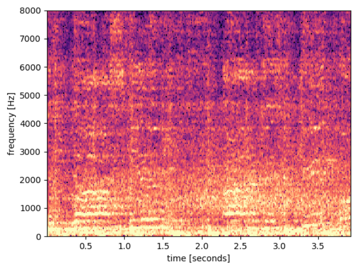 | 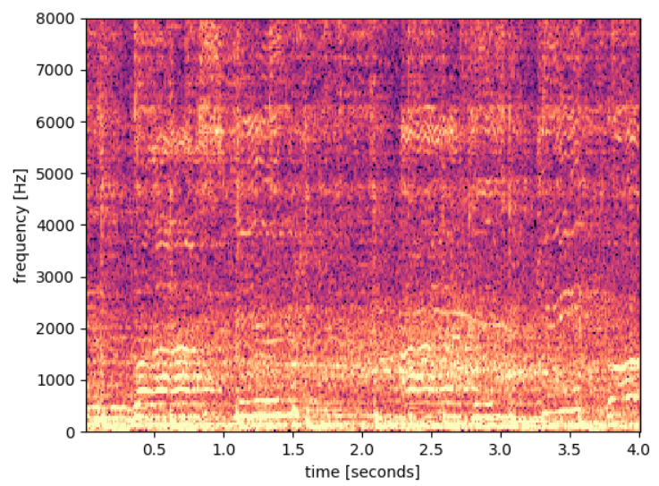 | 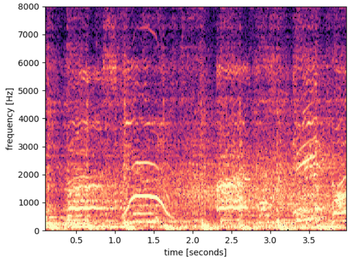 | 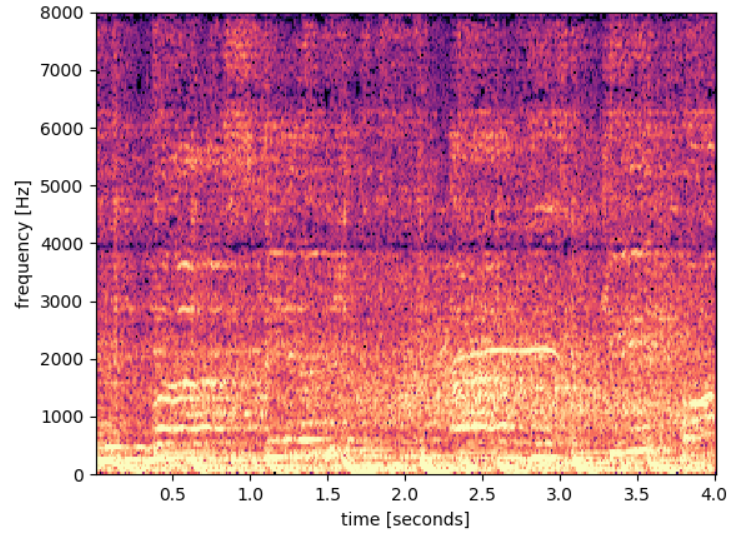 | 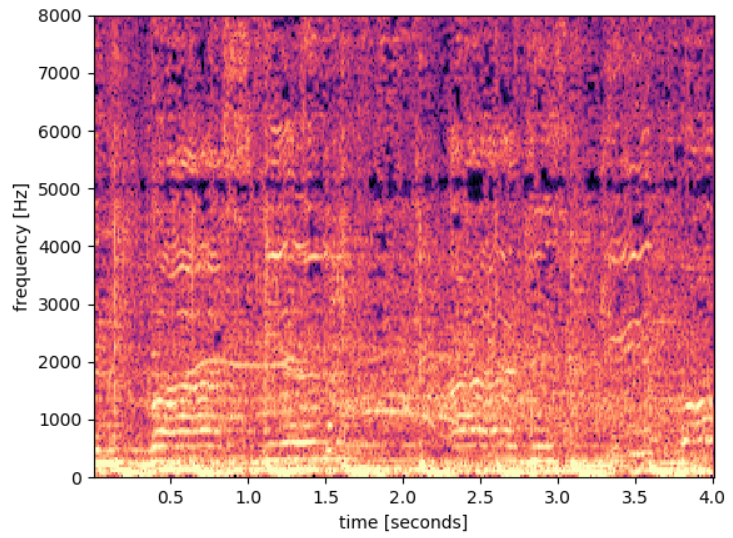 |
| our crowdsourced enhancement result | video (1) | video (2) | video (3) | video (4) |
|---|---|---|---|---|
| 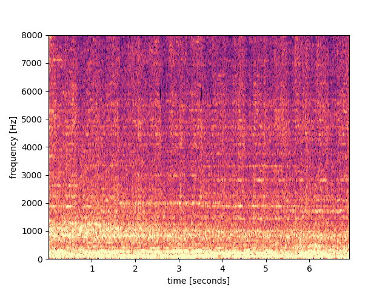 | 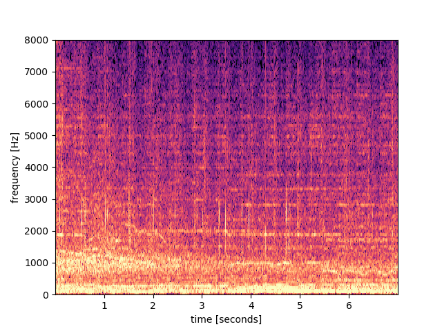 | 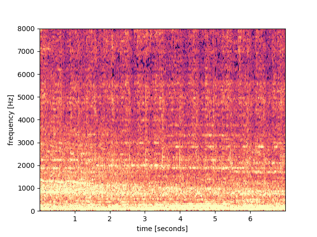 | 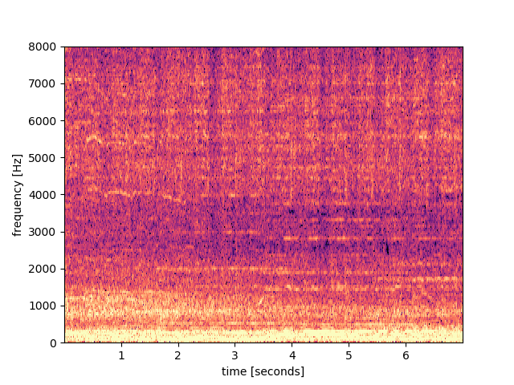 | 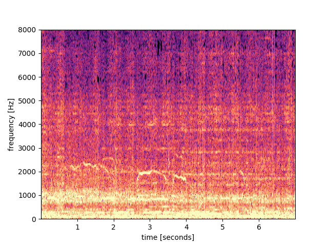 |
| our crowdsourced enhancement result | video (1) | video (2) | video (3) | video (4) | video (5) |
|---|---|---|---|---|---|
| video (6) | video (7) | video (8) | video (9) |
|---|
| our crowdsourced enhancement result | signal + noise (1) | signal + noise (2) | signal + noise (3) | signal + noise (4) | signal + noise (5) |
|---|---|---|---|---|---|
| 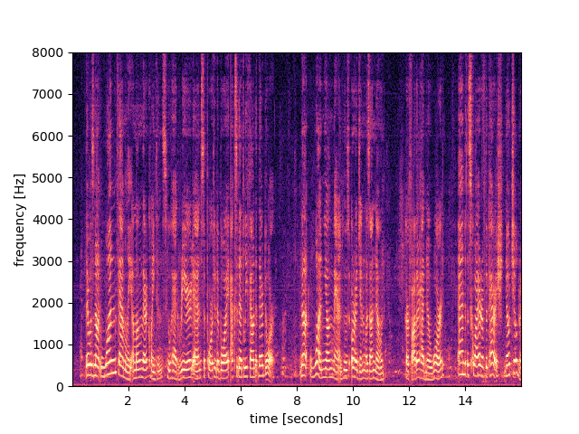 | 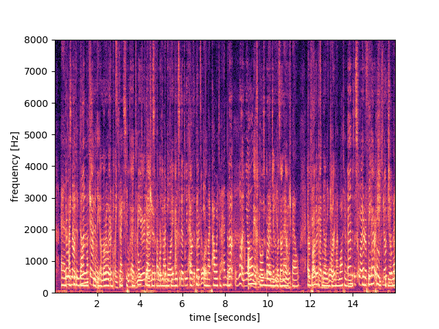 | 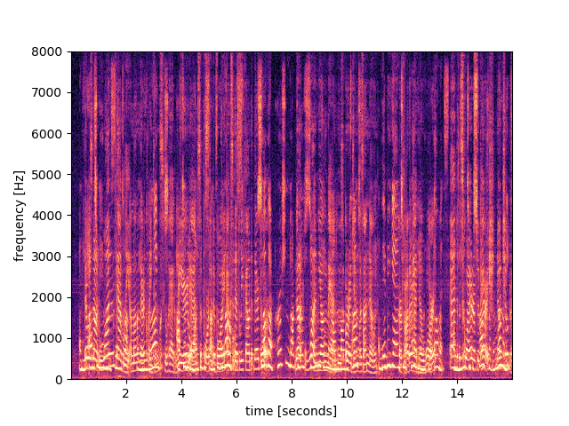 | 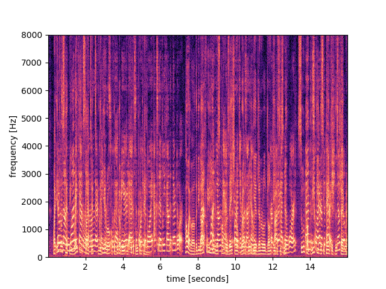 | 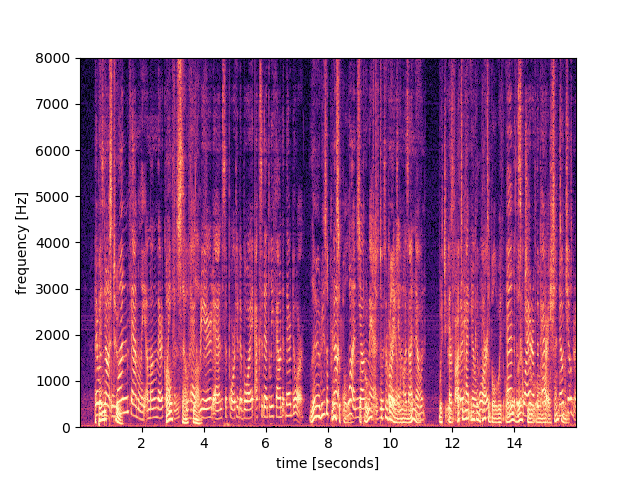 | 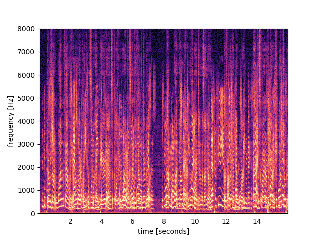 |
| our crowdsourced enhancement result | signal + noise (1) | signal + noise (2) | signal + noise (3) | signal + noise (4) | signal + noise (5) |
|---|---|---|---|---|---|
| 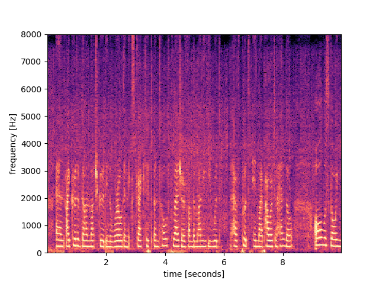 | 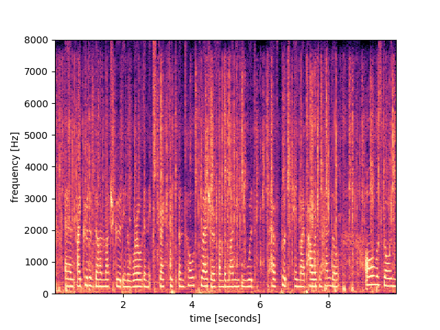 | 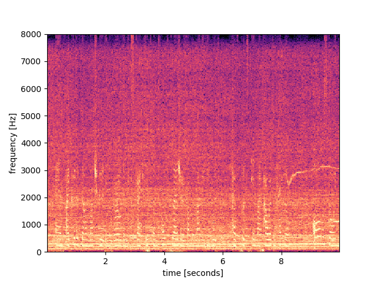 | 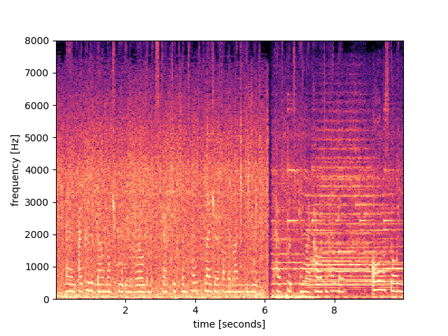 | 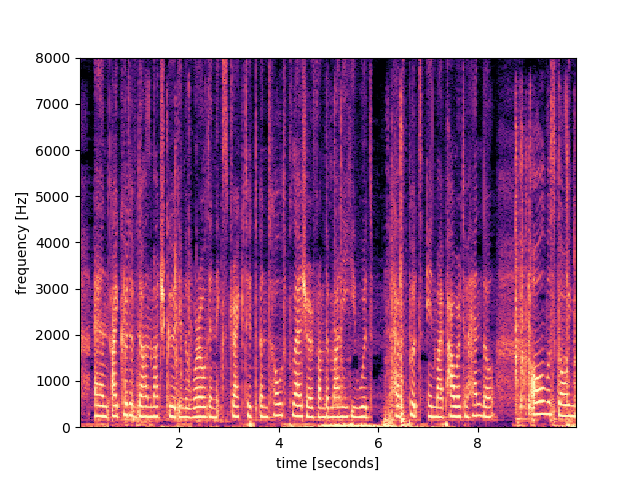 | 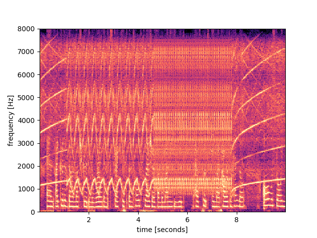 |
| our crowdsourced enhancement result | signal + noise (1) | signal + noise (2) | signal + noise (3) | signal + noise (4) | signal + noise (5) | signal + noise (6) | signal + noise (7) |
|---|---|---|---|---|---|---|---|
| our crowdsourced enhancement result | signal + noise (1) | signal + noise (2) | signal + noise (3) | signal + noise (4) | signal + noise (5) | signal + noise (6) | signal + noise (7) |
|---|---|---|---|---|---|---|---|